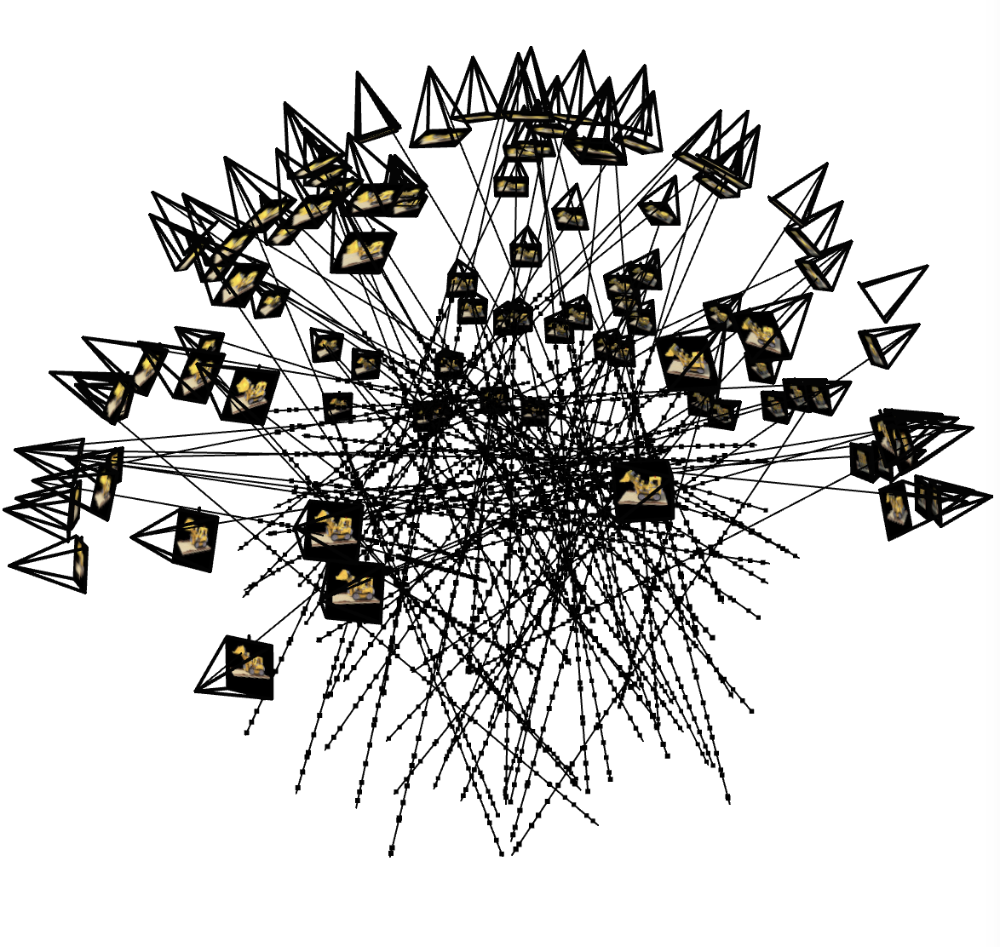
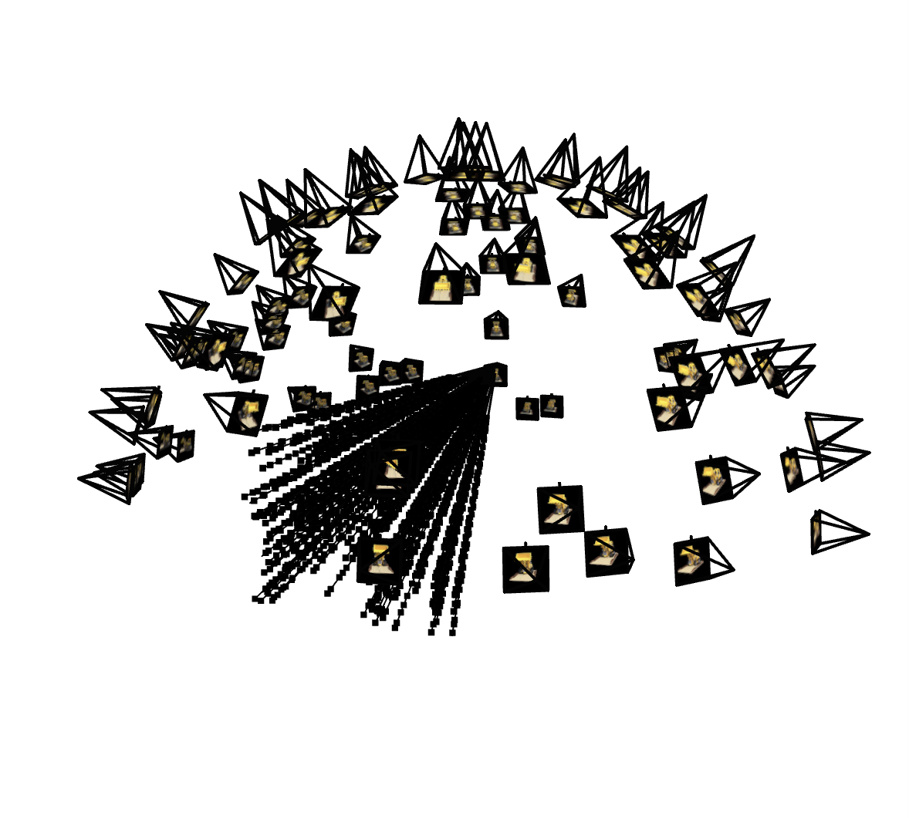
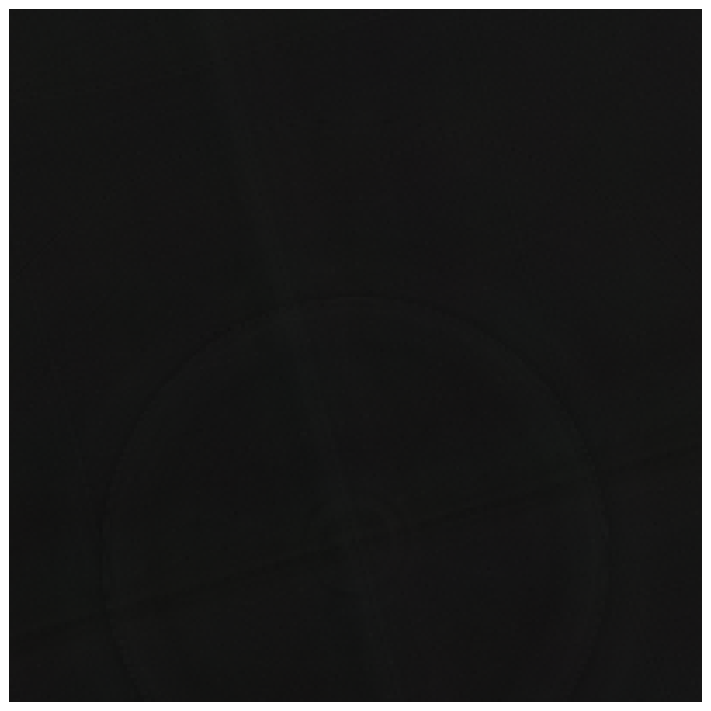
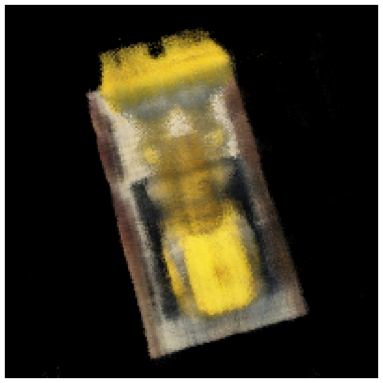
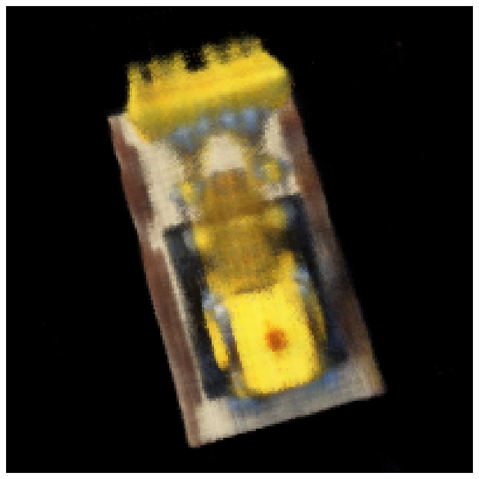
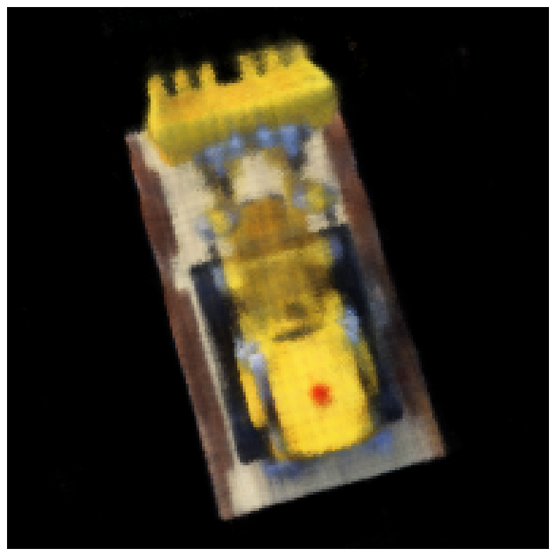
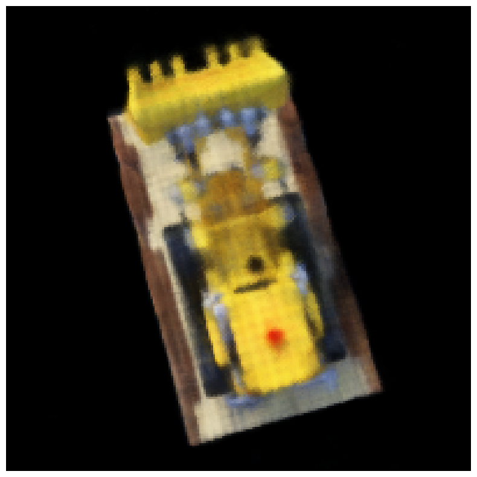
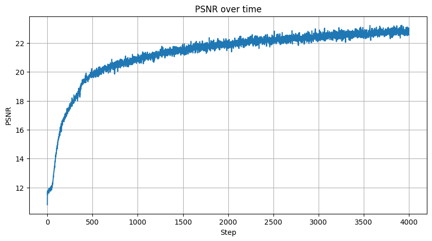

Part 2: 3d NeRF
In Part 2, I implemented the NeRF to represent a 3D scene of a Lego model from multiple viewpoints by performing several key steps. First, I handled ray generation and camera transformation by converting pixel coordinates to camera space and then to world space rays, generating rays with origins and directions for each pixel while managing camera intrinsics (focal length) and extrinsics (camera poses). Next, during point sampling, I sampled points along each ray between near (2.0) and far (6.0) bounds using stratified sampling with random perturbation for improved training, creating 32 samples per ray for density and color prediction. The NeRF architecture employed positional encoding for coordinates (L=10) and viewing directions (L=4), utilizing a hierarchical network structure with skip connections to output density (σ) and RGB colors for each sampled point. For volume rendering, I accumulated color and density along rays using the volume rendering equation, calculated alpha compositing weights through transmittance, and rendered final pixel colors by integrating along rays. Throughout training, visualization demonstrated the model's progress from random noise to a clear representation of the Lego model. Finally, I rendered novel views using test camera poses, initially with a traditional black background and subsequently with a green background.
Ray visualization


Training Progress

Step 0

Step 1000

Step 2000

Step 3000

Step 4000

Training loss curve

Black background
Green background